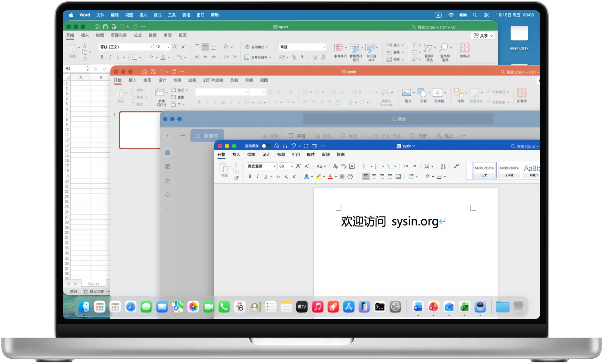
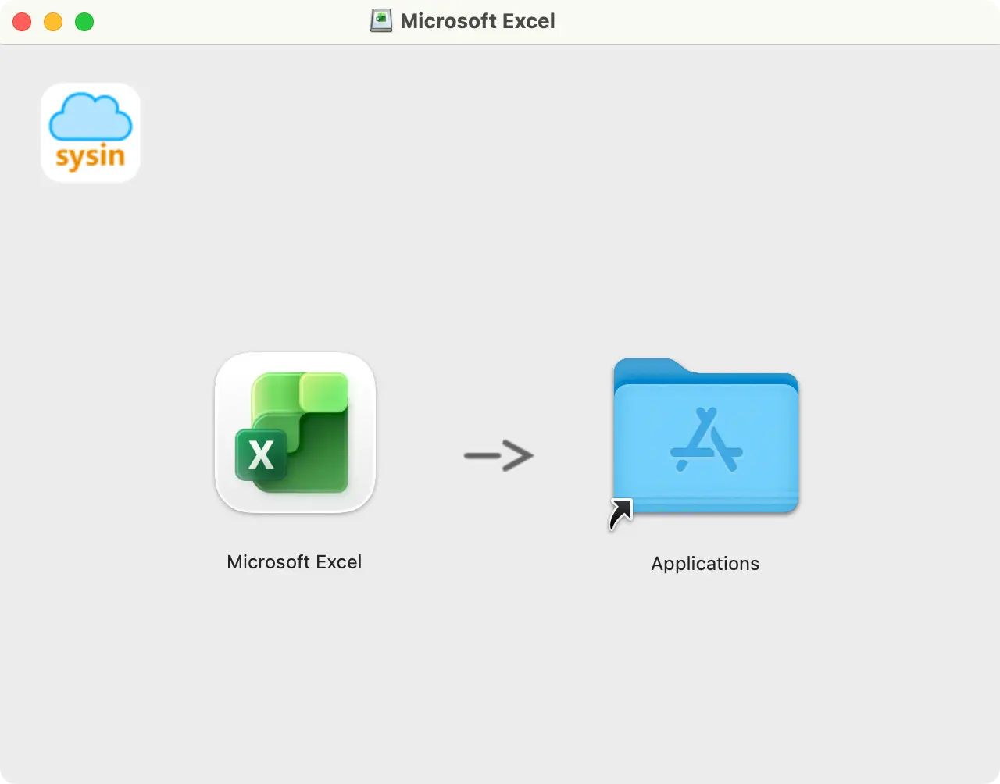
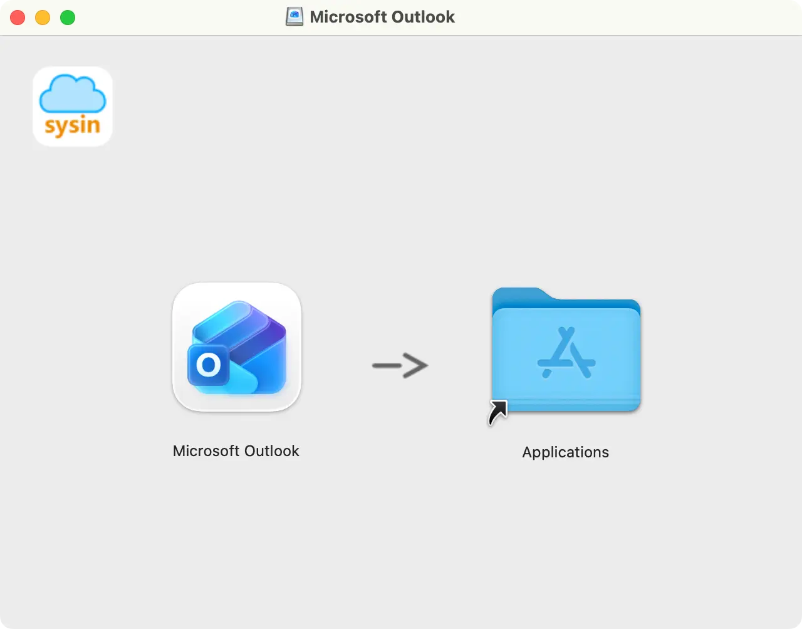
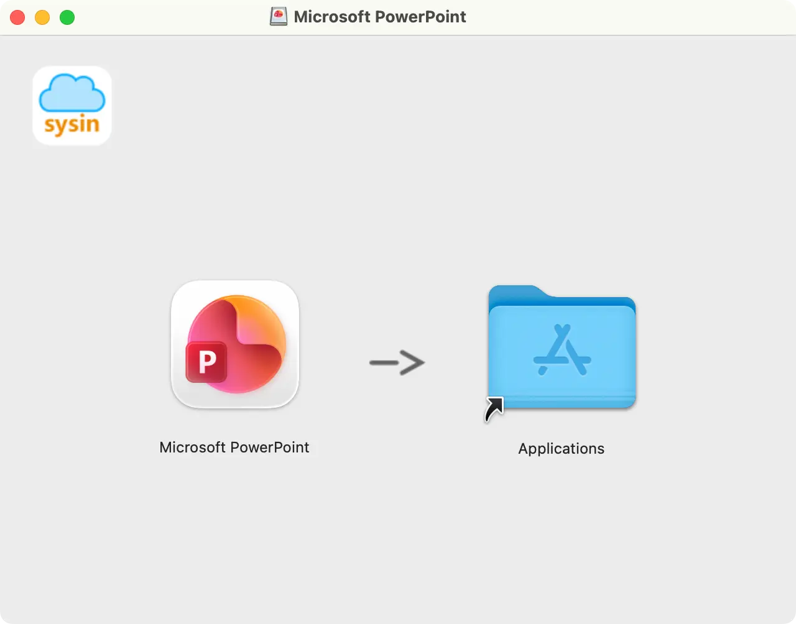
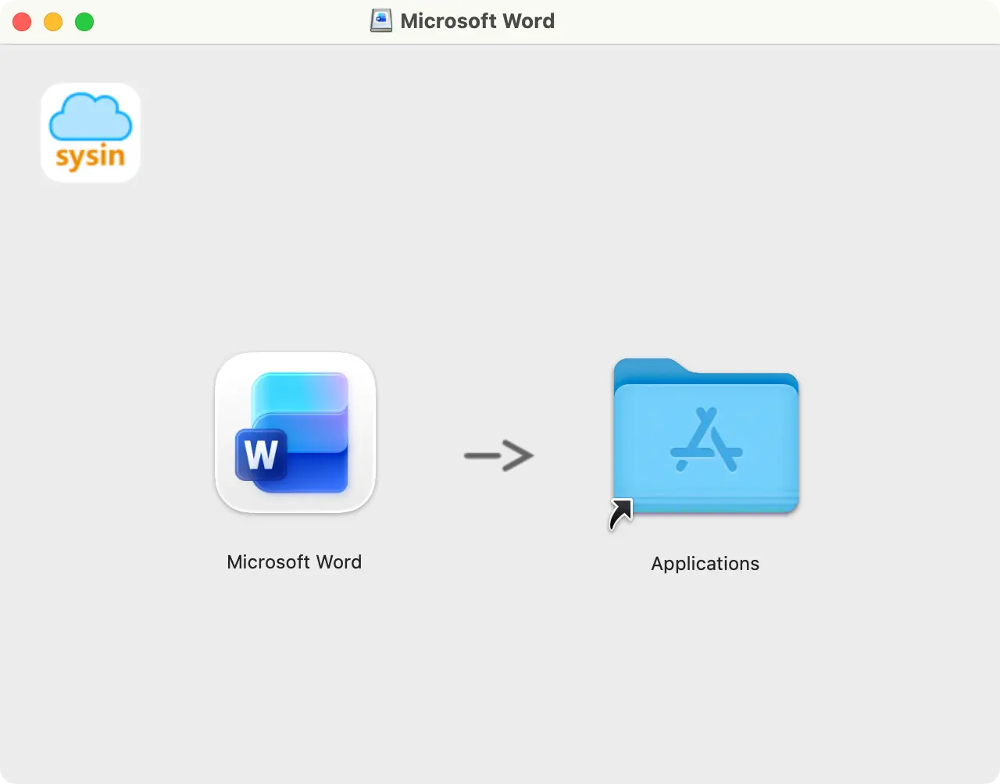

请访问原文链接：Microsoft Office LTSC 2024 for Mac 16.112 - 文档、电子表格、演示文稿和电子邮件 查看最新版。原创作品，转载请保留出处。
作者主页：sysin.org

宣布推出适用于 Windows 和 Mac 的 Microsoft Office LTSC 2024 正式版
2024 年 9 月 16 日
微软很高兴地宣布，Microsoft Office LTSC 2024 的正式版现已适用于 Windows 和 Mac。
如果您有 Office 2016、Office 2019 或 Office LTSC 2021 并且想要预览 Office LTSC 2024，请访问安装 Office LTSC 正式版，了解如何在 Windows 设备上安装和激活。有关如何安装和激活 Office LTSC for Mac 正式版的说明，请查看下文。
有关 Office LTSC 2024 正式版的问题可以在此论坛中提出。在 Microsoft 365 订阅中使用 Word、Excel、PowerPoint、Outlook、OneNote、Access、Project 或 Visio 的客户不应安装 Office LTSC 2024 的正式版。
Microsoft 365 订阅已包含 Office LTSC 2024 中即将提供的所有功能。
Office LTSC 2024 for Mac 正式版概述
备注
- 本文适用于正式版程序，可能会有所更改。
- 此预览计划适用于希望购买和部署 Office LTSC 2024 for Mac 的组织，该新批量许可 (永久) 版 Office。
- 此预览计划不适用于已从 Microsoft 365 (或 Office 365) 计划购买和部署 Office 的组织。
- 此预览计划不适用于 Office 的家庭用户。
Office LTSC 2024 for Mac 正式版可供你在组织中运行 macOS 的设备上安装和测试。它包括 Excel、OneNote、Outlook、PowerPoint 和 Word。
有关在运行 Windows 的设备上安装 Office 正式版的信息，请参阅 安装 Office LTSC 正式版。
正式版中的更改
Office LTSC 2024 for Mac 正式版中的更改
总体而言，与 Office 2021 for Mac 相比，Office LTSC 2024 for Mac 正式版的安装和运行方式没有显著差异。
但是，请务必注意，Microsoft Teams 应用未预安装 (sysin)，但可以 单独下载。
正式版中保持不变
在 Office LTSC 2024 for Mac 正式版中保持不变
Office LTSC 2024 for Mac 正式版的主版本是 16.x，与 Office 2021 for Mac 的主版本相同。从 Office 2021 for Mac 升级时，使用相同的主版本具有以下优势：
- 应用程序设置（包括策略、首选项和首选项域）保持不变。
- 与 Office 2021 for Mac 兼容的加载项和其他扩展性解决方案很可能与 Office LTSC 2024 for Mac 正式版兼容，或者只需要最少的测试。
正式版中包含的新功能
Office LTSC 2024 for Mac 正式版中包含的新功能
Office LTSC 2024 for Mac 基于早期版本的核心功能，引入了多项改进，可提高工作效率、安全性和可访问性。此更新包括用于在 Outlook 中创建会议和优化搜索功能的新选项。此外，Excel 还接收了一系列新功能，例如动态图表和数组 (sysin)，这标志着与上一 Office LTSC 版本相比的重大改进。
虽然 Office LTSC 2024 for Mac 增强了各种功能，但它不包括 Microsoft 365 应用版 中提供的 AI 和基于云的功能。因此，用户无法访问实时协作、Excel、PowerPoint 和 Word 中的 AI 驱动的自动化，也无法访问针对混合工作环境定制的高级安全性和合规性工具。
请记住，Office LTSC 2024 for Mac 发布后也不会收到任何新功能。如果想要持续获取新的 Office 功能，应考虑迁移到包含 Office 的 Microsoft 365 计划。许多业务和企业计划包括 Microsoft 365 应用版。这些计划还提供 Office for Mac，其中包括与 Office LTSC 2024 for Mac 相同的 Office 应用。
有关详细信息，请参阅 比较 Microsoft 365 企业计划、比较 Office 365 企业计划和比较 Microsoft 365 商业计划。
有关正式版的其他信息
有关 Office LTSC 2024 for Mac 正式版的其他信息
macOS 要求
Office LTSC 2024 for Mac 正式版在三个最新版本的 macOS 上受支持。随着 macOS 的新主版本正式发布，Microsoft 停止对最早版本的支持，并支持最新版和前两个版本的 macOS。产品功能和功能可用性可能因旧系统而异。
内存和磁盘空间
要安装 Office LTSC 2024 for Mac 正式版的设备应具有至少 4 GB 的内存和至少 10 GB 的可用磁盘空间。
芯片集支持
Office LTSC 2024 for Mac 正式版提供对 Apple Silicon 和基于 Intel 的 Mac 的本机支持 (sysin)。有关详细信息，请参阅 Microsoft 365、Office 2021 和 Office 2019 对 Apple Silicon 的支持。
Internet 访问
下载安装程序包后，无需访问 Internet 即可安装、激活或使用 Office LTSC 2024 for Mac 正式版。
并行安装
Office LTSC 2024 for Mac 正式版不能并行安装在具有 Office 2021 for Mac 的同一设备上。如果已安装 Office 2021 for Mac，则会将其替换为 Office LTSC 2024 for Mac 正式版。
还原为 Mac Office 2021
若要返回到在设备上使用 Office 2021 for Mac，请执行以下步骤：
- 关闭所有 Office 应用。
- 删除 /Library/Preferences/com.microsoft.office.licensingV2.plist
- 运行适用于 Office 2021 的 VL 序列化程序 for Mac Standard。有关详细信息，请参阅 批量许可证 (VL) 序列化程序概述。
受支持的语言
统一为多国语言版本，内置简体中文和繁体中文支持，参看所有 受支持的语言。
下载地址
Office for Mac 2024 (Microsoft 365) pkg
⚠️：请慎用此版本，需要 root 权限才能运行，安装一堆无用文件，强制自动更新。
此版本的唯一优点是开放下载，各大网站通常提供的也是此版本。
Microsoft Office for Mac 2024 (Office 365) 16.112 Universal（2026-08-12）
- 百度网盘链接：https://pan.baidu.com/s/1xCXqrMOZp_5fFJ4WFykADA?pwd=k6rm
- 系统要求：从 16.101 开始，要求 macOS Sonoma 14.0 及以上版本。
从 16.84 开始，Office 2024 和 Office 2022 是共用安装文件 (sysin)，通过许可证激活不同的版本，主要体现在界面风格上有较为明显差异，另外 2024 版有一些新增功能。
Office 365 (现在称为 Microsoft 365 Apps) 是一种订阅模式，永久许可版即 Office LTSC for Mac。
Office LTSC 2024 for Mac DMG VL
该产品符合 Apple 平台设计规范，无需 root 权限安装，只需要拖拽到应用程序下即可，无需登录，没有自动更新程序，也不会提示过期。
- 无需 root 权限，拖拽即可安装
- 无需登录账号（无需注册，支持离线使用）
- 无自动更新程序
- 不会提示过期
- 可以仅安装单个组件
包含 Excel、Outlook、PowerPoint 和 Word 四个核心组件，可独立运行单个组件。

Microsoft Excel：电子表格和数据分析

Microsoft Outlook：电子邮件和日历

Microsoft PowerPoint：创建吸引人的演示文稿

Microsoft Word：创建、编辑和分享文档
备注：OneNote 免费，需要登录。
Microsoft Office LTSC 2024 for Mac DMG VL v16.89 (Final version) for macOS Montery 12
Microsoft Office LTSC 2024 for Mac DMG VL v16.100 (Final version) for macOS Ventura 13
Microsoft Office LTSC 2024 for Mac DMG VL v16.112 for macOS Sonoma 14 or later
- 支持 macOS Sonoma 14、macOS Sequoia 15 和 macOS Tahoe 26
- 多国语言版本，内置英文、简体中文和繁体中文支持，更多详见上文。
- 百度网盘链接：https://pan.baidu.com/s/1UtMOmY0DTRDN-GpV3w-9zg?pwd= <专享>
- 2026-08-12，将/已上传到上个版本相同目录。
- 提示：此产品每月例行更新，通常无新功能，仅修复问题，请勿随意更新，特别是专业文档工作者，建议保持已知适配良好的版本。
相关产品：

文章用于推荐和分享优秀的软件产品及其相关技术，所有软件默认提供官方原版（免费版或试用版），免费分享。对于部分产品笔者加入了自己的理解和分析，方便学习和研究使用。任何内容若侵犯了您的版权，请联系作者删除。如果您喜欢这篇文章或者觉得它对您有所帮助，或者发现有不当之处，欢迎您发表评论，也欢迎您分享这个网站，或者赞赏一下作者，谢谢！
 支付宝赞赏
支付宝赞赏  微信赞赏
微信赞赏赞赏一下
敬请注册！点击 “登录” - “用户注册”（已知不支持 21.cn/189.cn 邮箱）。 请勿使用联合登录（已关闭）。